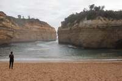

Anna KUCHCINSKA
EN RECHERCHE D'UN CONTRAT DEPROFESSIONNALISATION DÈS le 13/09/2022
DÉVELOPPEUR WEB & WEB MOBILE

COURS
OPENCLASSROOMS
- La logique de programmation
- Création de pages Web avec HTML et CSS
- Apprenez à créer votre site web avec HTML5 et CSS3 (en cours)
EXPÉRIENCIES PROFESSIONNELLES EN FRANCE
ASSISTANTE OFFICE MANAGER
Talend via Charlestown| Depuis Juillet 2021
- Entretien des dossiers, de l'équipement et des services de bureau
- Collaboration avec les prestataires de l'entreprise
NOURRICE ANGLOPHONE ET PROFESSEUR D’ANGLAIS
Les Petits Bilingues Nantes | Septembre 2019 - Mai 2021
- Application d’un programme d’apprentissage pour les enfants de 3 à14 ans en centre
- Préparation d’activités adaptées à l’âge et niveau d’anglais des enfantsà leur domicile
ASSISTANTE MANAGER
Gigg's Irish Pub, Nantes | Juin 2014 – Avril 2018
- Management et organisation d’une équipe de 12 personnes (salle &cuisine)
- Création de plannings
- Gestion de la trésorerie, fermeture de la caisse
- Inventaire, commande et négociation des stocks avec les fournisseurs
- Accueil et service de la clientèle
- Promotion de produits via réseau sociaux
- Organisation de soirées événementielles (sport, concerts, séminaires
ÉDUCATION
- MASTER EN SCIENCE BIOLOGIQUE, SPÉCIALITÉ PROTECTION ET AMENAGEMENT MILIEU TERRESTRE
Université Adam Mickiewicz, Pologne | 2011-2013
- PROGRAMME ERASMUS, FACULTÉ DE TECHNOLOGIES ENVIRONNEMENTAL, ÉNERGIE DURABLE (cours en anglais)
Avans Hogeschool, Pays-Bas | 2012
{kind=link}
{kind=link}